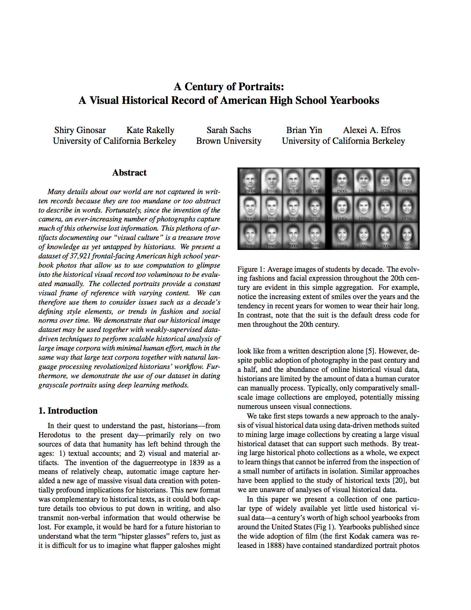

A Century of Portraits:
A Visual Historical Record of American High School Yearbooks
Abstract
Many details about our world are not captured in written records because they are too mundane or too abstract to describe in words. Fortunately, since the invention of the camera, an ever-increasing number of photographs capture much of this otherwise lost information. This plethora of artifacts documenting our “visual culture” is a treasure trove of knowledge as yet untapped by historians. We present a dataset of 37,921 frontal-facing American high school yearbook photos that allow us to use computation to glimpse into the historical visual record too voluminous to be evaluated manually. The collected portraits provide a constant visual frame of reference with varying content. We can therefore use them to consider issues such as a decade’s defining style elements, or trends in fashion and social norms over time. We demonstrate that our historical image dataset may be used together with weakly-supervised data-driven techniques to perform scalable historical analysis of large image corpora with minimal human effort, much in the same way that large text corpora together with natural lan- guage processing revolutionized historians’ workflow. Furthermore, we demonstrate the use of our dataset in dating grayscale portraits using deep learning methods.
People
- Shiry Ginosar
- Kate Rakelly
- Sarah Sachs (Brown University)
- Brian Yin
- Alexei A. Efros
Paper
-

A Century of Portraits: A Visual Historical Record of American High School Yearbooks
Shiry Ginosar, Kate Rakelly, Sarah Sachs, Brian Yin, Alexei A. Efros A Century of Portraits: A Visual Historical Record of American High School Yearbooks, To Appear in Extreme Imaging Workshop, International Conference on Computer Vision, ICCV 2015. and IEEE Transactions on Computational Imaging, September 2017. PDF, BibTeX
@ARTICLE{ginosar2017yearbooks,
author={S. Ginosar and K. Rakelly and S. M. Sachs and B. Yin and C. Lee and P. Krähenbühl and A. A. Efros},
journal={IEEE Transactions on Computational Imaging},
title={A Century of Portraits: A Visual Historical Record of American High School Yearbooks},
year={2017},
volume={3},
number={3},
pages={421-431},
keywords={Data mining;Face;Imaging;Market research;Sociology;Statistics;Visualization;Data mining;deep learning;historical data;image dating},
doi={10.1109/TCI.2017.2699865},
month={Sept}
}
Sample Results
The Top Trends of Each Decade
Dataset
-
The Yearbook Dataset
The Yearbook Dataset of frontal-facing American high-school seniors from 1905 to 2013 is hosted on space donated by Dropbox. All faces are aligned using an affine transformation in a process described in the paper.
The training and test lists for female faces used in the paper are also provided.
If you would like to obtain other formats of the data (raw images, non-frontal facing portraits etc) or, alternatively, if you would like to contribute more yearbook data send us an email to: <shiry at eecs dot berkeley dot edu>.
This dataset is covered by the MIT license.
Trained Dating Models
Caffe trained dating models on Model Zoo.
Popular Press
Radio and Television
Printed News and Blogs
Funding
This material is based upon work supported by the NSF Graduate Research Fellowship DGE 1106400, ONR MURI N000141010934 and an NVidia hardware grant.
See Also
Developed concurrently and independent from our work, Prof. Nathan Jacobs' group at the University of Kentucky also proposed using yearbook data for dating images.
Patrick Feaster from Indiana University Bloomington published a fascinating blog post in 2014 using face averaging in yearbook photographs to track the rise of the photo smile. He also provides several hypotheses on why smiles came to be the norm in portraiture.
Jason Salavon, an American contemporary artist and an Associate Professor at The University of Chicago, created a piece in 1998 from average images of personally-significant yearbook photographs. In his work titled The Class of 1988 & The Class of 1967, he presents averages of all the male and female students of his graduating class of 1988 and contrasts them with averages of the students in his mother's graduating class of 1967 from the same hometown of Fort Worth, Texas.